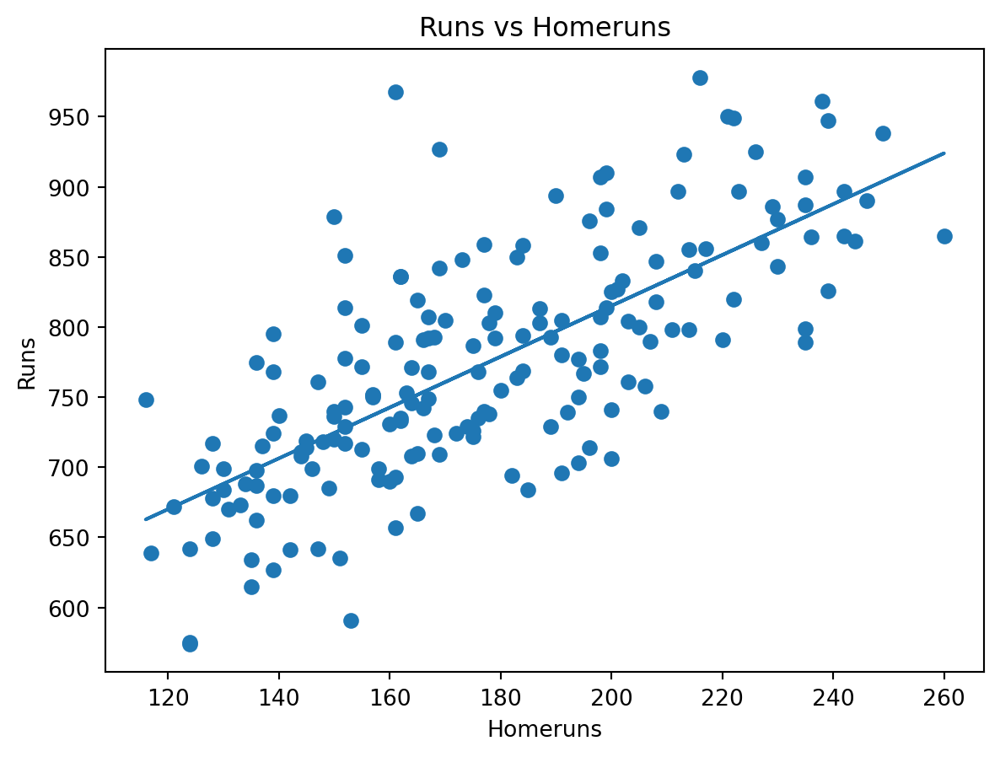
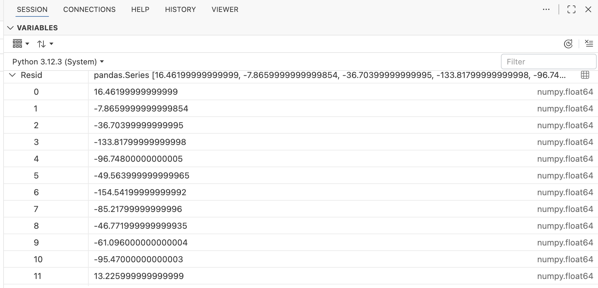
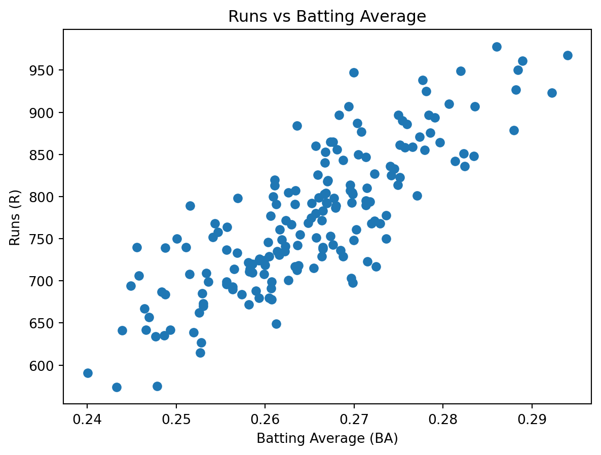
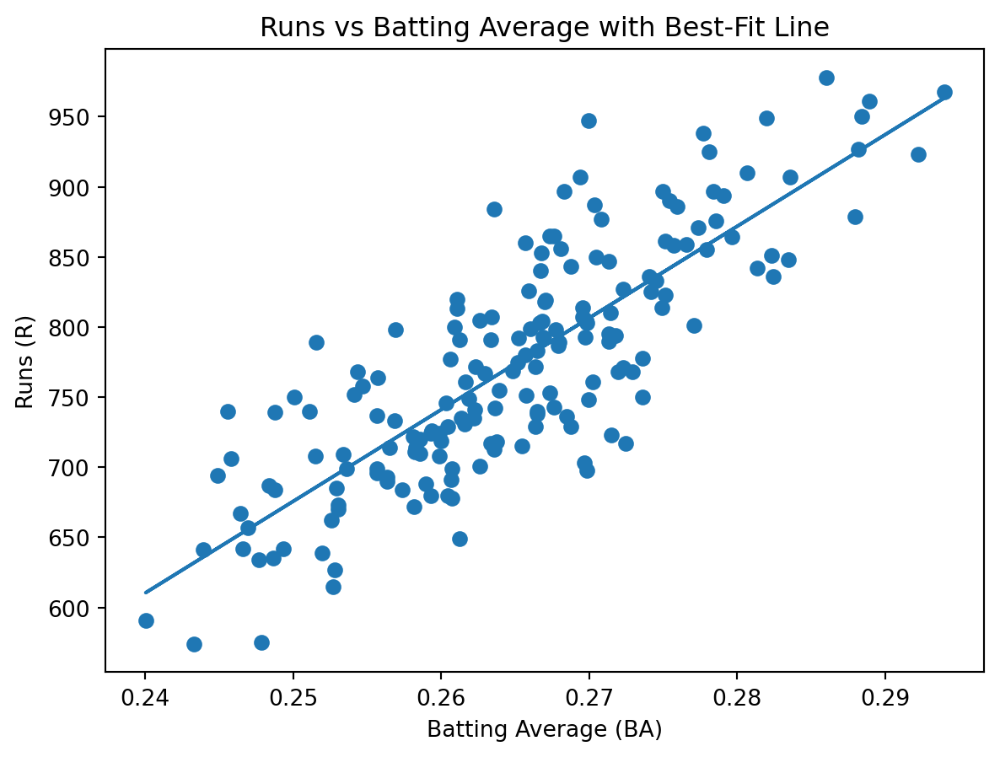
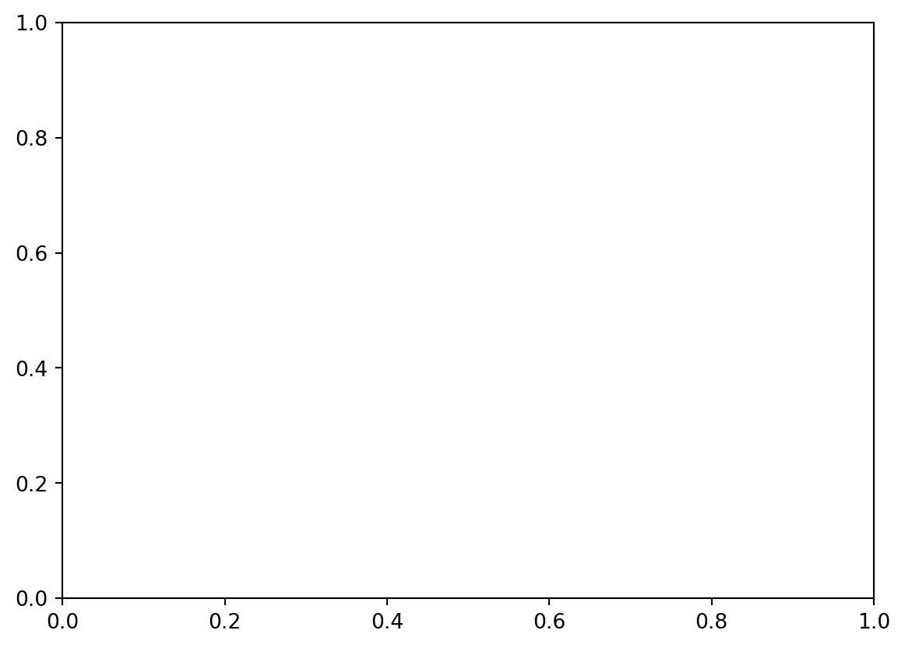

import numpy as np
import pandas as pd
import matplotlib.pyplot as plt
# Basic regression
import statsmodels.api as smPython 1: Baseball Data Analysis with Pandas, pybaseball, and Quarto
DATA 367 — Intro Sports Analytics Workflow
Overview
In this assignment you will:
- set up a basic sports analytics workflow in Python using pandas and numpy,
- access a real baseball dataset using the pybaseball library,
- answer a clearly stated baseball question using correlation and a simple regression,
- write up your analysis in Quarto (
.qmd), - and use Git + GitHub Classroom to clone, commit, and push your work.
This assignment is designed to introduce you of (or remind you of) the pieces of a typical data analysis pipeline (load → clean → explore → model → communicate), and to get you comfortable using a sports data library and the GitHub Classroom workflow.
Academic integrity and collaboration
You may discuss ideas and debugging strategies with classmates, but your code, figures, and written analysis must be your own work unless your instructor explicitly authorizes collaboration. If you use an external source (AI, documentation, blog post, etc.), cite it in a short note.
Use of Generative AI
Generative AI tools are increasingly used in contemporary professional data-science practice, and their thoughtful use is permitted for this assignment. However, you are a student developing professional skills, not yet a practicing professional. You are therefore fully responsible for the correctness, clarity, and quality of all work you submit, including verifying any AI-generated suggestions and making independent decisions about methods, code, and interpretation.
AI tools may assist with brainstorming, explanation, or coding support, but you should consider whether your use of AI is helping you build the skills required of a successful data-science professional, or merely reproducing output you do not fully understand.
Any use of generative AI must be explicitly acknowledged. Failure to disclose AI use may be considered a violation of the Code of Academic Integrity. If you are unsure whether a particular use of AI is appropriate for this assignment, please ask before submitting.
AI Acknowledgment Statement
I acknowledge the use of [AI system name(s)] to [describe how the tool was used]. Prompts used included [link or pasted prompt(s)].
GitHub Classroom workflow
Accept the assignment and clone your repository
Accept the assignment using the GitHub Classroom link provided on the course site. After acceptance, you will have your own private repository on GitHub.
Now clone the assignment to your computer. To do this in Positron, first open positron. You can either click New in the upper left hand corner, and then choose New Folder From Git…, or you can choose New Folder From Git in the center of the screen:

Next you will see this dialogue box:

In the box below “Git repository URL” paste your GitHub Classroom repository URL. In the box below “Create folder as a subfolder of” decide where on your computer you would like to keep the code for this class, type in that directory, and click OK.
Now open the python1.qmd file in the editor
Environment and packages
Required packages
We will use the following python packages in this assignment:
pandasandnumpy(core data analysis)matplotlib(plots)statsmodels(simple regression and statistical summaries)
If you do not have them installed, you will find out when you try executing the code below. If you get an error message that a package is missing, then install it using the instructions for your system.
Import packages
Every python script will begin by importing packages. A python package is a library of code that contains certain tools. Python’s standard library is intentionally small. So most data analysis work relies on external packages (also called modules or libraries) that extend Python with tools for data handling, visualization, and statistical modeling. Before you can use a package, you must import it.
In the code block below, we import the packages needed for this assignment. Run this cell.
In Python, we use the import statement to bring in tools from external libraries. However, how we write that statement changes how we access those tools in our code.
Here is a breakdown of the common patterns you will see in this assignment and throughout the industry:
Importing with Aliases (as): Most major data science libraries have “standard” aliases. While you could technically name them anything, using these conventions makes your code readable to other analysts.
import pandas as pd: Instead of typingpandas.DataFrame(), you just typepd.DataFrame().
import numpy as np: Shortens the frequent calls to math functions.The f
rom ... import ...style: This is used when you only need a specific “tool” (a function or class) from a large library, rather than the whole thing.
When to use it: Use this for specific tasks, like frompybaseball import batting_stats. This allows you to callbatting_stats()directly without typingpybaseball.batting_stats().Why use it: It keeps your code “cleaner” and can slightly improve performance by not loading unnecessary parts of a large package into your local namespace.
Namespace Safety: The main reason we use pd. or np. prefixes (the “namespace”) is to avoid naming collisions. If you imported everything directly and two different libraries both had a function named mean(), Python wouldn’t know which one you intended to use. Prefixes act like “last names” for functions to keep them distinct.
Sanity check
A sanity check is a quick, low-stakes test to ensure your environment is behaving as expected before you start your analysis.
print("numpy:", np.__version__)
print("pandas:", pd.__version__)numpy: 1.26.4
pandas: 2.2.2When we print __version__, we are verifying:
Installation: That the library is actually installed and accessible.
Pathing: That Quarto is using the correct Python environment.
Compatibility: That we are using a version of the library that supports the features we plan to use.
A Baseball Dataset: MLB team batting stats
The data given in BaseballRuns.csv shows offensive statistics for MLB teams from 2000–2005.
Import the data into Python using the following code. Run this cell.
# Read the data. Notice that
## 1. We use the "read_csv" function from the pandas library that we imported above with the alias "pd"
## 2. This returns what is called a "data frame" which we have given the name bbr
bbr = pd.read_csv("data/BaseballRuns.csv") Variables in the Dataset
The first thing you must understand about any data set is what information it contains. In the data set we just loaded we have the following varaibles:
lg— league (AL for American League, NL for National League)team— city of team (three-letter abbreviation)G— number of games played (162 is normal)Ghome— number of home games played (81 is normal)W— number of winsL— number of lossesR— number of runs scoredAB— number of at batsX1B— number of singlesX2B— number of doublesX3B— number of triplesHR— number of homerunsBB— number of walksSO— number of strikeoutsSB— number of stolen basesCS— number of times caught stealingHBP— number of batters hit by pitchSF— number of sacrifice flies
Inspect the data
In data analysis, we never assume the data is “clean” just because it loaded. We use exploratory functions to orient ourselves. Here is a breakdown of some data inspection functions we can use. You can use some or all of these to get a sense for a new data set, and you will learn other useful data inspection functions and techniques as you gain experience.
bbr.head()
What it does: Returns the first 5 rows of the DataFrame.
Why do it: This is your first “look” at the data. It confirms that the columns aligned correctly and gives you a sense of the data types (e.g., are the team names strings? are the stats decimals?).
bbr.head()| year | lg | team | G | Ghome | W | L | R | AB | H | 1B | 2B | 3B | HR | BB | SO | SB | CS | HBP | SF | |
|---|---|---|---|---|---|---|---|---|---|---|---|---|---|---|---|---|---|---|---|---|
| 0 | 2000 | AL | ANA | 162 | 81 | 82 | 80 | 864 | 5628 | 1574 | 995 | 309 | 34 | 236 | 608 | 1024 | 93 | 52 | 47 | 43 |
| 1 | 2000 | AL | BAL | 162 | 81 | 74 | 88 | 794 | 5549 | 1508 | 992 | 310 | 22 | 184 | 558 | 900 | 126 | 65 | 49 | 54 |
| 2 | 2000 | AL | BOS | 162 | 81 | 85 | 77 | 792 | 5630 | 1503 | 988 | 316 | 32 | 167 | 611 | 1019 | 43 | 30 | 42 | 48 |
| 3 | 2000 | AL | CHA | 162 | 81 | 95 | 67 | 978 | 5646 | 1615 | 1041 | 325 | 33 | 216 | 591 | 960 | 119 | 42 | 53 | 61 |
| 4 | 2000 | AL | CLE | 162 | 81 | 90 | 72 | 950 | 5683 | 1639 | 1078 | 310 | 30 | 221 | 685 | 1057 | 113 | 34 | 51 | 52 |
bbr.shape
What it does: Returns a tuple representing the dimensionality: (rows, columns). (Note: This is an attribute, not a function, so it doesn’t use parentheses).
Why do it: It tells you the scale of your dataset. If you expected 30 teams but see 600 rows, you know you’ve likely pulled multi-year data or individual player stats instead of team stats.
bbr.shape(180, 20)bbr.columns
What it does: Lists the names of every column in the dataset.
Why do it: pybaseball datasets often have over 300 columns. You need the exact spelling and capitalization of column names (e.g., is it R or runs?) to select them later without causing KeyErrors.
bbr.columnsIndex(['year', 'lg', 'team', 'G', 'Ghome', 'W', 'L', 'R', 'AB', 'H', '1B',
'2B', '3B', 'HR', 'BB', 'SO', 'SB', 'CS', 'HBP', 'SF'],
dtype='object')bbr.describe()
What it does: We can get a summary of what is in this data frame. For each numerical variable gives total count, and gives mean, standard deviation, and quartiles.
What do it: Gives an initial sense of the scope of the data and some basic summary statistics.
bbr.describe()| year | G | Ghome | W | L | R | AB | H | 1B | 2B | 3B | HR | BB | SO | SB | CS | HBP | SF | |
|---|---|---|---|---|---|---|---|---|---|---|---|---|---|---|---|---|---|---|
| count | 180.000000 | 180.000000 | 180.000000 | 180.000000 | 180.000000 | 180.000000 | 180.000000 | 180.000000 | 180.000000 | 180.000000 | 180.000000 | 180.000000 | 180.000000 | 180.000000 | 180.000000 | 180.000000 | 180.000000 | 180.000000 |
| mean | 2002.500000 | 161.922222 | 80.883333 | 80.933333 | 80.933333 | 773.650000 | 5552.950000 | 1472.038889 | 969.650000 | 294.577778 | 30.672222 | 177.138889 | 542.266667 | 1046.816667 | 91.683333 | 40.633333 | 59.455556 | 46.394444 |
| std | 1.712589 | 0.373053 | 0.609744 | 12.510822 | 12.512608 | 83.539137 | 80.080705 | 74.951110 | 56.970979 | 26.225272 | 8.288668 | 33.139246 | 74.503766 | 100.378305 | 30.086927 | 12.056154 | 12.781499 | 9.244353 |
| min | 2000.000000 | 161.000000 | 77.000000 | 43.000000 | 46.000000 | 574.000000 | 5330.000000 | 1300.000000 | 850.000000 | 201.000000 | 12.000000 | 116.000000 | 363.000000 | 805.000000 | 31.000000 | 12.000000 | 29.000000 | 25.000000 |
| 25% | 2001.000000 | 162.000000 | 81.000000 | 71.000000 | 71.000000 | 714.000000 | 5496.750000 | 1422.500000 | 933.000000 | 277.750000 | 25.000000 | 152.000000 | 489.000000 | 984.250000 | 69.000000 | 32.750000 | 51.000000 | 40.000000 |
| 50% | 2002.500000 | 162.000000 | 81.000000 | 82.000000 | 80.000000 | 768.000000 | 5545.000000 | 1470.000000 | 966.500000 | 293.000000 | 30.000000 | 173.500000 | 536.500000 | 1040.500000 | 88.500000 | 40.000000 | 58.000000 | 46.000000 |
| 75% | 2004.000000 | 162.000000 | 81.000000 | 91.000000 | 91.000000 | 828.500000 | 5609.750000 | 1516.500000 | 1000.500000 | 310.250000 | 36.000000 | 200.000000 | 593.500000 | 1099.000000 | 109.250000 | 48.000000 | 67.000000 | 52.000000 |
| max | 2005.000000 | 163.000000 | 82.000000 | 116.000000 | 119.000000 | 978.000000 | 5769.000000 | 1667.000000 | 1186.000000 | 373.000000 | 61.000000 | 260.000000 | 775.000000 | 1399.000000 | 177.000000 | 74.000000 | 95.000000 | 75.000000 |
bbr.isna().sum().sort_values(ascending=False).head(15)
This is a “chained” command that performs several operations at once to check for missingness:
.isna(): Checks every cell to see if it is empty (NaN).
.sum(): Counts the number of True (missing) values for each column.
.sort_values(ascending=False): Puts the columns with the most missing data at the top.
.head(15): Limits the output to the top 15 “offenders.”
Why do it: Missing data can break your math. If a column you plan to use as a predictor is 50% empty, your regression results will be misleading or your code will crash. This identifies those landmines early.
bbr.isna().sum().sort_values(ascending=False).head(15)year 0
lg 0
HBP 0
CS 0
SB 0
SO 0
BB 0
HR 0
3B 0
2B 0
1B 0
H 0
AB 0
R 0
L 0
dtype: int64The above output tells us none of the variables have any empty data.
The Heart of the Analysis: Asking the Right Questions
Ok, this gets us some data ready to work with, but let’s change directions a bit and take a braoder view.
In sports analytics, we aren’t just “calculating numbers”; we are trying to solve puzzles. A typical front-office inquiry often starts with a simple, high-stakes question: “What actually drives winning?” or “What metric best predicts our ability to score?”
To be a good sports data scientist, you need to understand your sport, what data is available, and how to analyze it. Let’s now talk a bit about data analysis. While modern “black-box” machine learning models are popular, they aren’t always necessary. Often, a clean correlation or a simple linear regression provides the clarity needed to make a multi-million dollar decision.
Our Example Question: R vs HR
If you’re not familiar with baseball, a run (R) in baseball is any point scored when a player touches home plate safely.
Whichever team ends the game with the most runs wins the game. So, predicting who will win a baseball game means predicting which team will score the most runs.
Now, a home run (HR) is a specific type of play where the batter hits the ball over the fence (or rounds all bases) to score at least one run. A single home run can result in 1 to 4 runs.
So, every home run scores at least one run, but not every run is a homerun. However, one would think that a team that scores more home run is likely to score more runs over all.
Creating and Plotting a Linear Model
To investigate this hunch, let us plot HR versus R:
# Import the pyplot module from the matplotlib library.
# matplotlib is a very common Python library used for creating plots and charts.
# The 'pyplot' part provides a simple interface for making figures.
# We import it as 'plt' by convention, to keep later commands short and readable.
import matplotlib.pyplot as plt
# Create a new, empty figure (a plotting window).
# Think of a "figure" as a blank piece of graph paper where we can draw a plot.
# If you do not explicitly create a figure, matplotlib will still make one,
# but being explicit is good practice, especially as plots get more complex.
plt.figure()
# Create a scatter plot.
# A scatter plot shows individual data points as dots.
#
# bbr["HR"] provides the values for the x-axis (horizontal axis).
# In this case, these are the number of home runs.
#
# bbr["R"] provides the values for the y-axis (vertical axis).
# In this case, these are the number of runs scored.
#
# Each row of the data produces one dot on the plot.
plt.scatter(bbr["HR"], bbr["R"])
# Label the x-axis.
# This text will appear below the horizontal axis,
# helping the reader understand what the x-values represent.
plt.xlabel("Homeruns")
# Label the y-axis.
# This text will appear to the left of the vertical axis,
# explaining what the y-values represent.
plt.ylabel("Runs")
# Add a title to the plot.
# The title appears at the top of the figure and summarizes
# what relationship the plot is showing.
plt.title("Runs vs Homeruns")
# Display the plot on the screen.
# Without this line, the plot may not appear,
# especially when running the code as a script.
plt.show()
We can see that there seems to be a general positive correlation. That is, as the number of homeruns increases (along the x-axis), the number of runs tends to increase as well.
We can now create the “best-fitting line” for this data:
# Import the formula-based interface from the statsmodels library.
#
# statsmodels is a Python library used for statistical modeling.
# It provides tools for fitting linear regression models, hypothesis tests,
# and other classical statistical methods.
#
# The 'formula.api' submodule allows us to specify models using
# a formula syntax that looks very similar to what you might see in R or statistics textbooks.
#
# We import it as 'smf' by convention, which is short for "statsmodels formula".
import statsmodels.formula.api as smf
# Fit a linear regression model using Ordinary Least Squares (OLS).
#
# The string "R ~ HR" is the model formula:
# - 'R' is the response (dependent) variable.
# - 'HR' is the predictor (independent) variable.
# - The '~' symbol means "is modeled as a function of".
#
# In words, this model says:
# "We are modeling Runs (R) as a linear function of Home Runs (HR)."
#
# The 'data=bbr' argument tells statsmodels where to find the variables
# named in the formula. In this case, 'bbr' is a DataFrame that contains
# columns named 'R' and 'HR'.
#
# smf.ols(...) creates the regression model object,
# but it does NOT actually compute the regression yet.
#
# The '.fit()' method runs the regression calculations
# and estimates the slope, intercept, and other statistics.
#
# The fitted model is stored in the variable 'g'.
g = smf.ols("R ~ HR", data=bbr).fit()This stores the line — and much information about this line — in the variable g. This command itself doesn’t return any output, but we can see the intercept and slope of this line by calling the params method of g:
# Access the estimated parameters (coefficients) of the fitted regression model.
#
# 'g' is the fitted regression model that we created earlier using .fit().
# After fitting the model, statsmodels stores the estimated numerical results
# inside this object.
#
# The '.params' attribute contains the regression coefficients.
# These are the numbers that define the fitted line.
#
# For a simple linear regression like R ~ HR, this will typically include:
# - 'Intercept': the estimated value of R when HR = 0
# - 'HR': the estimated change in R for a one-unit increase in HR
#
# Conceptually, these parameters describe the equation of the fitted line:
# R ≈ Intercept + (HR coefficient) × HR
#
# When you run this line in Python, it will display the coefficients,
# usually as a labeled pandas Series.
g.paramsIntercept 452.358365
HR 1.813784
dtype: float64We add this line to the plot as follows:
# Create a new, empty figure for our plot.
# As before, a figure is the "canvas" on which we draw our visualization.
plt.figure()
# Create a scatter plot of the original data.
# Each point represents one observation (for example, one team or one season).
#
# The x-values come from the "HR" column (home runs).
# The y-values come from the "R" column (runs scored).
plt.scatter(bbr["HR"], bbr["R"])
# Label the x-axis so the reader knows what the horizontal values represent.
plt.xlabel("Homeruns")
# Label the y-axis so the reader knows what the vertical values represent.
plt.ylabel("Runs")
# Add a title that summarizes what relationship is being visualized.
plt.title("Runs vs Homeruns")
# --------------------------------------------------
# Add the fitted regression line to the scatterplot
# --------------------------------------------------
# Store the x-values (home runs) in a variable.
# This makes the next steps easier to read and understand.
x = bbr["HR"]
# Compute the predicted y-values using the fitted regression model.
#
# g.params contains the estimated regression coefficients:
# g.params[0] is the intercept (the predicted number of runs when HR = 0)
# g.params[1] is the slope (how much runs increase for each additional home run)
#
# The regression line has the form:
# y_hat = intercept + slope * x
#
# Here, y_hat represents the model's predicted runs for each value of HR.
y_hat = g.params["Intercept"] + g.params["HR"] * x
# Plot the regression line on the same figure.
#
# plt.plot draws a line instead of points.
# Because we use the same x-values as the scatter plot,
# the line overlays the data and shows the fitted linear trend.
plt.plot(x, y_hat)
# Display the completed plot on the screen.
# This shows both the original data (points) and the fitted regression line.
plt.show()
What Do We Mean by “Best-Fitting Line”?
The equation for this best-fitting line is:
R = 452.358 + 1.815 · HRWe can use this equation (model) to predict how many runs a team scored based on how many homeruns they hit.
For example, the 2000 Anaheim Angels (ANA) hit 236 homeruns, so our model predicts they scored 880.698 runs. They actually scored 864 runs. The difference between the predicted number of runs and the actual number of runs is called a residual. In this case, the residual is 16.698.
We can use Python to calculate the predicted number of runs scored for each team:
# Create predicted values using a linear regression equation.
#
# This line computes a predicted number of runs for each value of HR
# using a specific linear formula:
#
# Predicted Runs = 452.358 + 1.814 × Home Runs
#
# Here:
# - 452.358 is the intercept (the predicted number of runs when HR = 0)
# - 1.814 is the slope (the increase in runs for each additional home run)
# - bbr["HR"] is a column of home run values
#
# Because bbr["HR"] is a pandas Series (a whole column of data),
# this calculation is done element-by-element.
# The result is a new pandas Series of predicted run values,
# one for each row in the dataset.
#
# IMPORTANT: This line does NOT return or display anything by itself.
#
# Why?
# - The result is not assigned to a variable.
# - It is not printed using print().
# - It is not the final line of a notebook cell whose output is automatically shown.
#
# In Python, calculations only produce visible output if you:
# (1) assign them to a variable,
# (2) explicitly print them, or
# (3) return them from a function.
#
# As written, Python performs the calculation and then immediately discards the result.
Pred = 452.358 + 1.814 * bbr["HR"]Although this line of Python code does not print anything for us to see, in Positron you can inspect the values in Pred in the VARIABLES tab under SESSION:

And the residual for each team:
Resid = Pred - bbr["R"]A “best-fitting” line should somehow minimize these residuals — and our line actually minimizes the sum of the squares of the residuals — which is why it is often called the least-squares line.

We now calculate the sum of the squares of the residuals:
sum(Resid * Resid)602493.639948But if we try a different line, such as:
Pred2 = 410 + 2 * bbr["HR"]Then calculate the predicted values and residuals:
Resid2 = Pred2 - bbr["R"]
sum(Resid2 * Resid2)625121The sum of the squares for these residuals will be more than the sum of the squares of the residuals for our original model.
The best-fit line is also called the regression line. Remember: it is called the best-fit line because it minimizes the sum of the squares of the residuals.
Important Info Regarding This Linear Model
To get more details about our best-fitting line:
# Display a detailed statistical summary of the fitted regression model.
#
# 'g' is a fitted statsmodels regression object (created using .fit()).
#
# The .summary() method generates a formatted table that includes:
# - The estimated regression coefficients (intercept and slope)
# - Standard errors of the estimates
# - t-statistics and p-values for hypothesis tests
# - R-squared and adjusted R-squared values
# - Information about the sample size and model fit
#
# This output is meant for human interpretation.
# It prints a nicely formatted report rather than returning a simple number.
#
# In Jupyter or Quarto, this summary will be displayed automatically
# when this line is the last line of a code cell.
g.summary()| Dep. Variable: | R | R-squared: | 0.518 |
|---|---|---|---|
| Model: | OLS | Adj. R-squared: | 0.515 |
| Method: | Least Squares | F-statistic: | 191.1 |
| Date: | Mon, 26 Jan 2026 | Prob (F-statistic): | 5.40e-30 |
| Time: | 11:32:10 | Log-Likelihood: | -985.84 |
| No. Observations: | 180 | AIC: | 1976. |
| Df Residuals: | 178 | BIC: | 1982. |
| Df Model: | 1 | ||
| Covariance Type: | nonrobust |
| coef | std err | t | P>|t| | [0.025 | 0.975] | |
|---|---|---|---|---|---|---|
| Intercept | 452.3584 | 23.645 | 19.131 | 0.000 | 405.698 | 499.019 |
| HR | 1.8138 | 0.131 | 13.823 | 0.000 | 1.555 | 2.073 |
| Omnibus: | 11.424 | Durbin-Watson: | 1.788 |
|---|---|---|---|
| Prob(Omnibus): | 0.003 | Jarque-Bera (JB): | 12.433 |
| Skew: | 0.515 | Prob(JB): | 0.00200 |
| Kurtosis: | 3.772 | Cond. No. | 983. |
Notes:
[1] Standard Errors assume that the covariance matrix of the errors is correctly specified.
The most important thing to look at right now is the R-squared value which is 0.518. This means that 51.8% of the variation in runs can be explained by the number of homeruns.
The Residual standard error is another important piece of information, but not always printed in statsmodels summary table. The residual standard error gives us an idea of the size of the average residual. For our purposes, you can think of it as the standard deviation of the residuals. If it is not displayed in the table above you can compute it with the following:
# Compute the residual standard error of the regression model.
#
# 'g' is a fitted statsmodels OLS regression object.
#
# In statsmodels:
# - g.scale stores the estimated variance of the residuals (σ̂²),
# not the standard deviation.
#
# The residual standard error (often called RSE in statistics textbooks)
# is the square root of this variance:
#
# RSE = sqrt(σ̂²)
#
# We use np.sqrt(...) to take the square root of g.scale.
# The result is a single number that measures the typical size
# of the model's prediction errors (in units of the response variable, Runs).
#
rse = np.sqrt(g.scale)
print(rse)58.178984370939745This means that we would expect about 95% of residuals to be within the interval:
(−2 · 58.18, 2 · 58.18)Your Turn: Building and Evaluating New Baseball Statistics
So far, we have fit a linear model predicting Runs (R) using an existing statistic.
Now you will create new statistics, fit linear models using them, and evaluate how well they predict runs scored.
We will work with the following commonly used baseball statistics.
Definitions
BA (Batting Average):
\[ \mathrm{BA}=\frac{1B+2B+3B+HR}{AB} \]
SLG (Slugging Percentage):
\[ \mathrm{SLG}=\frac{1B+2\cdot 2B+3\cdot 3B+4\cdot HR}{AB} \]
OBP (On-Base Percentage):
\[ \mathrm{OBP}=\frac{1B+2B+3B+HR+BB+HBP}{AB+BB+HBP+SF} \]
OPS (On-base Plus Slugging):
\[ \mathrm{OPS}=\mathrm{OBP}+\mathrm{SLG} \]
What to produce for each new statistics
For each of the four relationships below, you must produce all of the following:
- A scatter plot of runs versus the statistic.
- A best-fit regression line added to the scatter plot.
- A regression equation that predicts runs scored
- R-squared (\(R^2\))
- Residual Standard Error (RSE)
- Report:
- The regression equation (using the intercept and slope)
- The \(R^2\) value and 1-2 sentences interpreting it in context
- The RSE value and 1-2 sentences interpreting it in context
Example: Batting Average (BA)
We will do batting average together, start to finish. Use this as a model for the remaining parts.
Create Batting Average
# Batting Average (BA) measures how often a team gets a hit per at-bat.
# We compute it using singles, doubles, triples, and home runs, divided by at-bats.
bbr["BA"] = (bbr["1B"] + bbr["2B"] + bbr["3B"] + bbr["HR"]) / bbr["AB"]Scatter Plot of Runs vs BA
import matplotlib.pyplot as plt
plt.figure()
plt.scatter(bbr["BA"], bbr["R"])
plt.xlabel("Batting Average (BA)")
plt.ylabel("Runs (R)")
plt.title("Runs vs Batting Average")
plt.show()
Fit the Linear Model and Add Line to Scatter Plot
import statsmodels.formula.api as smf
g_ba = smf.ols("R ~ BA", data=bbr).fit()
# Display the full regression summary
g_ba.summary()| Dep. Variable: | R | R-squared: | 0.677 |
|---|---|---|---|
| Model: | OLS | Adj. R-squared: | 0.675 |
| Method: | Least Squares | F-statistic: | 373.5 |
| Date: | Mon, 26 Jan 2026 | Prob (F-statistic): | 1.42e-45 |
| Time: | 11:32:10 | Log-Likelihood: | -949.69 |
| No. Observations: | 180 | AIC: | 1903. |
| Df Residuals: | 178 | BIC: | 1910. |
| Df Model: | 1 | ||
| Covariance Type: | nonrobust |
| coef | std err | t | P>|t| | [0.025 | 0.975] | |
|---|---|---|---|---|---|---|
| Intercept | -958.2445 | 89.689 | -10.684 | 0.000 | -1135.236 | -781.253 |
| BA | 6535.7986 | 338.204 | 19.325 | 0.000 | 5868.393 | 7203.204 |
| Omnibus: | 2.005 | Durbin-Watson: | 1.656 |
|---|---|---|---|
| Prob(Omnibus): | 0.367 | Jarque-Bera (JB): | 2.051 |
| Skew: | 0.248 | Prob(JB): | 0.359 |
| Kurtosis: | 2.833 | Cond. No. | 102. |
Notes:
[1] Standard Errors assume that the covariance matrix of the errors is correctly specified.
Extract Key Quantities
import numpy as np
# Regression coefficients (intercept and slope)
params_ba = g_ba.params
# R-squared
r2_ba = g_ba.rsquared
# Residual standard error (RSE) = sqrt(estimated residual variance)
rse_ba = np.sqrt(g_ba.scale)
params_ba, r2_ba, rse_ba(Intercept -958.244498
BA 6535.798553
dtype: float64,
0.6772184385906694,
47.59494819749408)Add the Best-Fit Line to the Plot
plt.figure()
plt.scatter(bbr["BA"], bbr["R"])
# x-values for the line
x = bbr["BA"]
# Predicted runs from the fitted model:
# y_hat = intercept + slope * x
intercept = g_ba.params["Intercept"]
slope = g_ba.params["BA"]
# Predicted values from the fitted regression line
y_hat = intercept + slope * x
# Draw the fitted line on top of the scatter plot
plt.plot(x, y_hat)
plt.xlabel("Batting Average (BA)")
plt.ylabel("Runs (R)")
plt.title("Runs vs Batting Average with Best-Fit Line")
plt.show()
Write Your Interpretation (BA)
Report:
- The fitted linear regression model predicting runs scored from batting average is \[R =−958.24+6535.80⋅BA\] This equation says that, according to the model, an increase of 0.001 in batting average is associated with an increase of about 6.54 runs over the season.
- The \(R^2\) value for this model is: \[R^2=0.677\]This means that approximately 67.7% of the variation in runs scored across teams can be explained by differences in batting average alone. This is a relatively strong linear relationship, indicating that batting average is a meaningful predictor of run production, though a substantial portion of variability remains unexplained.
- The RSE value for this model is \[RSE = 47.6 \text{ runs}\] This tells us that the model’s predictions are typically off by about 48 runs per season. In practical baseball terms, this is a sizable error, suggesting that while batting average explains much of the variation in runs, other factors (such as walks, power hitting, and situational hitting) also play an important role.
Your Turn: SLG, OBP, and OPS
For the remaining statistics, you must complete the analysis yourself.
Template code is provided below. You are responsible for filling in the missing pieces.
Slugging Percentage (SLG)
# TODO: Create slugging percentage (SLG)
# Hint: Use the definition above.
bbr["SLG"] = ...# TODO: Scatter plot of Runs vs SLG
plt.figure()
plt.scatter(bbr["SLG"], bbr["R"])
plt.xlabel("Slugging Percentage (SLG)")
plt.ylabel("Runs (R)")
plt.title("Runs vs Slugging Percentage")
plt.show()--------------------------------------------------------------------------- TypeError Traceback (most recent call last) Cell In[26], line 3 1 # TODO: Scatter plot of Runs vs SLG 2 plt.figure() ----> 3 plt.scatter(bbr["SLG"], bbr["R"]) 4 plt.xlabel("Slugging Percentage (SLG)") 5 plt.ylabel("Runs (R)") File /Library/Frameworks/Python.framework/Versions/3.12/lib/python3.12/site-packages/matplotlib/pyplot.py:3903, in scatter(x, y, s, c, marker, cmap, norm, vmin, vmax, alpha, linewidths, edgecolors, plotnonfinite, data, **kwargs) 3884 @_copy_docstring_and_deprecators(Axes.scatter) 3885 def scatter( 3886 x: float | ArrayLike, (...) 3901 **kwargs, 3902 ) -> PathCollection: -> 3903 __ret = gca().scatter( 3904 x, 3905 y, 3906 s=s, 3907 c=c, 3908 marker=marker, 3909 cmap=cmap, 3910 norm=norm, 3911 vmin=vmin, 3912 vmax=vmax, 3913 alpha=alpha, 3914 linewidths=linewidths, 3915 edgecolors=edgecolors, 3916 plotnonfinite=plotnonfinite, 3917 **({"data": data} if data is not None else {}), 3918 **kwargs, 3919 ) 3920 sci(__ret) 3921 return __ret File /Library/Frameworks/Python.framework/Versions/3.12/lib/python3.12/site-packages/matplotlib/__init__.py:1473, in _preprocess_data.<locals>.inner(ax, data, *args, **kwargs) 1470 @functools.wraps(func) 1471 def inner(ax, *args, data=None, **kwargs): 1472 if data is None: -> 1473 return func( 1474 ax, 1475 *map(sanitize_sequence, args), 1476 **{k: sanitize_sequence(v) for k, v in kwargs.items()}) 1478 bound = new_sig.bind(ax, *args, **kwargs) 1479 auto_label = (bound.arguments.get(label_namer) 1480 or bound.kwargs.get(label_namer)) File /Library/Frameworks/Python.framework/Versions/3.12/lib/python3.12/site-packages/matplotlib/axes/_axes.py:4876, in Axes.scatter(self, x, y, s, c, marker, cmap, norm, vmin, vmax, alpha, linewidths, edgecolors, plotnonfinite, **kwargs) 4870 linewidths = [ 4871 lw if lw is not None else mpl.rcParams['lines.linewidth'] 4872 for lw in linewidths] 4874 offsets = np.ma.column_stack([x, y]) -> 4876 collection = mcoll.PathCollection( 4877 (path,), scales, 4878 facecolors=colors, 4879 edgecolors=edgecolors, 4880 linewidths=linewidths, 4881 offsets=offsets, 4882 offset_transform=kwargs.pop('transform', self.transData), 4883 alpha=alpha, 4884 ) 4885 collection.set_transform(mtransforms.IdentityTransform()) 4886 if colors is None: File /Library/Frameworks/Python.framework/Versions/3.12/lib/python3.12/site-packages/matplotlib/collections.py:1027, in PathCollection.__init__(self, paths, sizes, **kwargs) 1013 def __init__(self, paths, sizes=None, **kwargs): 1014 """ 1015 Parameters 1016 ---------- (...) 1024 Forwarded to `.Collection`. 1025 """ -> 1027 super().__init__(**kwargs) 1028 self.set_paths(paths) 1029 self.set_sizes(sizes) File /Library/Frameworks/Python.framework/Versions/3.12/lib/python3.12/site-packages/matplotlib/collections.py:197, in Collection.__init__(self, edgecolors, facecolors, linewidths, linestyles, capstyle, joinstyle, antialiaseds, offsets, offset_transform, norm, cmap, pickradius, hatch, urls, zorder, **kwargs) 194 self._joinstyle = None 196 if offsets is not None: --> 197 offsets = np.asanyarray(offsets, float) 198 # Broadcast (2,) -> (1, 2) but nothing else. 199 if offsets.shape == (2,): TypeError: float() argument must be a string or a real number, not 'ellipsis'

# TODO: Fit the linear model for Runs vs SLG
g_slg = smf.ols("R ~ SLG", data=bbr).fit()
# Optional: view summary
g_slg.summary()| Dep. Variable: | R | R-squared: | 0.000 |
|---|---|---|---|
| Model: | OLS | Adj. R-squared: | 0.000 |
| Method: | Least Squares | F-statistic: | nan |
| Date: | Mon, 26 Jan 2026 | Prob (F-statistic): | nan |
| Time: | 11:32:11 | Log-Likelihood: | -1051.5 |
| No. Observations: | 180 | AIC: | 2105. |
| Df Residuals: | 179 | BIC: | 2108. |
| Df Model: | 0 | ||
| Covariance Type: | nonrobust |
| coef | std err | t | P>|t| | [0.025 | 0.975] | |
|---|---|---|---|---|---|---|
| Intercept | 773.6500 | 6.227 | 124.248 | 0.000 | 761.363 | 785.937 |
| Omnibus: | 2.125 | Durbin-Watson: | 1.841 |
|---|---|---|---|
| Prob(Omnibus): | 0.346 | Jarque-Bera (JB): | 2.069 |
| Skew: | 0.194 | Prob(JB): | 0.355 |
| Kurtosis: | 2.646 | Cond. No. | 1.00 |
Notes:
[1] Standard Errors assume that the covariance matrix of the errors is correctly specified.
# TODO: Compute and report:
# - regression coefficients
# - R-squared
# - residual standard error (RSE)
# - sum of squared residuals (SSR)
#
# Then write your interpretation in markdown below these outputs.
# params_slg = ...
# r2_slg = ...
# rse_slg = ...
# ssr_slg = ...
# params_slg, r2_slg, rse_slg, ssr_slg# TODO: Add the best-fit line to the scatter plot (Runs vs SLG)
# Hint: use g_slg.params[0] and g_slg.params[1]
# plt.figure()
# plt.scatter(bbr["SLG"], bbr["R"])
# x = bbr["SLG"]
# y_hat = ...
# plt.plot(x, y_hat)
# plt.xlabel("Slugging Percentage (SLG)")
# plt.ylabel("Runs (R)")
# plt.title("Runs vs SLG with Best-Fit Line")
# plt.show()On-Base Percentage (OBP)
# TODO: Create on-base percentage (OBP)
bbr["OBP"] = ...# TODO: Scatter plot of Runs vs OBP
# (Write your code here)# TODO: Fit the linear model for Runs vs OBP
# g_obp = ...# TODO: Compute and report params, R-squared, RSE, SSR for OBP
# params_obp = ...
# r2_obp = ...
# rse_obp = ...
# ssr_obp = ...
# params_obp, r2_obp, rse_obp, ssr_obp# TODO: Add the best-fit line to the scatter plot (Runs vs OBP)
# (Write your code here)OPS (On-Base Plus Slugging)
# TODO: Create OPS
# Hint: OPS = OBP + SLG
bbr["OPS"] = ...# TODO: Scatter plot of Runs vs OPS
# (Write your code here)# TODO: Fit the linear model for Runs vs OPS
# g_ops = ...# TODO: Compute and report params, R-squared, RSE, SSR for OPS
# params_ops = ...
# r2_ops = ...
# rse_ops = ...
# ssr_ops = ...
# params_ops, r2_ops, rse_ops, ssr_ops# TODO: Add the best-fit line to the scatter plot (Runs vs OPS)
# (Write your code here)When You’re Done
Answer the following question in complete sentences:
Which of BA, SLG, OBP, or OPS gives the highest \(R^2\) when predicting runs?
What does that suggest about what matters most for scoring runs?
Submission
Now submit your assignment by commiting your work to your local git repository and pushing the changes to your classroom Github repo. To do so in Positron
Click the “Source Control” icon on the left.

Type a message summarizing your work and push the commit button.

Click the Push icon.

Lastly, check on github classroom that you have committed your work!